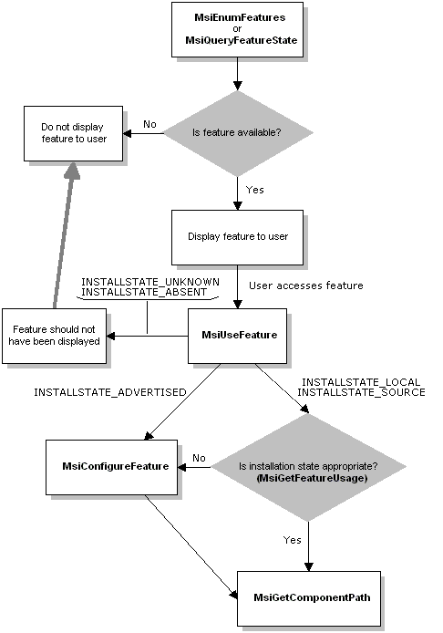

To request a feature
To request a feature
| Platform SDK: Windows Installer |
There are several functions an application must call to request features. Before requesting a feature, the application must ensure that the feature is installed. If the application calls MsiUseFeature before the application accesses a feature, the application can use the information returned to maintain usage metrics.
To request a feature
The following diagram illustrates the feature request model.

| What did you think of this topic? Let us know. |
Order a Platform SDK CD Online (U.S/Canada) (International) |